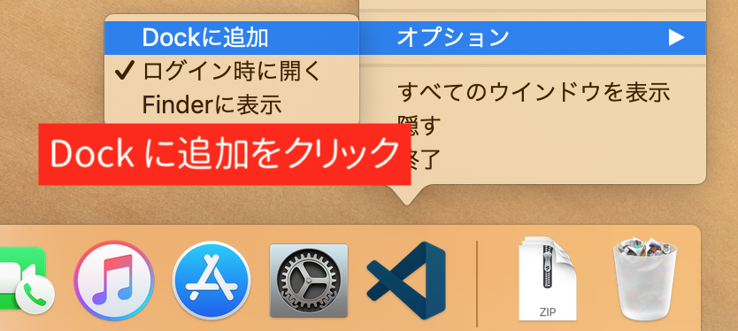

VS Codeのインストール
VS Codeをインストールしよう
Visual Studio Code、略して VS Code （ブイエス・コード） と呼びます。 これは、プログラムを書くための エディタ と呼ばれるソフトウェアです。
Windows の標準機能にある「メモ帳」もエディタの一種ですが、メモ帳と比べて VS Code はプログラミングに便利な機能がたくさん備わっています。
「コード (Code)」は、プログラムを動かすための命令をする文章のことです。ソースコードともいいます。
「Visual Studio Code（VS Code）」と似た名前のソフトウェアがいくつかありますが、それぞれ用途が違います。
「Code」がつかない Visual Studio（ビジュアルスタジオ、略して VS）は、主に Windows 向けのアプリを開発する場合に使用することが多いソフトウェアです。 VS Code と VS は、どちらも Microsoft 社が開発しています。
Xcode（エックスコード）は、主に Mac や iPhone、iPad 向けのアプリを開発する際に使用する Apple 社製のソフトウェアです。
VS Code をインストールしてみよう。
ブラウザ から VS Code の公式サイト https://code.visualstudio.com/ にアクセスしてください。
ダウンロードボタン（Download for Windows）をクリックします。すると、ページが切り替わった後にダウンロードが開始されます。
ダウンロードが完了すると、 Google Chrome の画面下部にファイルが表示されます。
VS Code のインストールに使うファイル自体は、 Google Chrome をダウンロードした時のようにダウンロードフォルダに保存されていますが、Chrome からもアクセスできます。
ファイル名をクリックしましょう。
インストーラーの起動時に「セキュリティの警告」のウィンドウが表示されたら、「実行」ボタンを押してください。
インストーラーに従ってインストールをしましょう。まず最初に使用するにあたっての注意書きが表示されます。同意する場合、「同意する(A)」をクリックして「次へ(N)」をクリックします。
下の画面は、インストール先の選択画面です。そのまま 「次へ(N)」 を押してください。
下の画面は、スタートメニューのショートカットを作成する選択画面です。そのまま 「次へ(N)」 を押してください。
下の画面は、デスクトップにショートカットアイコンを作る設定とパスの設定画面です。
3 箇所にチェックをつけます（既にチェックがついている場合はそのままにしてください）。
- デスクトップ上にアイコンを作成する(D)
- サポートされているファイルの種類のエディターとして、Code を登録する
- PATH への追加（再起動後に使用可能）
チェックをつけたら 「次へ(N)」 を押します。
下の画面は確認画面です。確認ができたら 「インストール(I)」 を押してインストールしましょう。
このような画面が表示されている間はインストール作業が行われています。そのままお待ちください。
インストールが完了すると、以下のような画面になります。「Visual Studio Code を実行する」にチェックが付いている場合は外し、「完了」を押したらインストール完了です。
ダウンロードボタン（Download for Mac）をクリックします。
ページが切り替わった後、ダウンロードが開始され、ダウンロードフォルダに zip ファイルが保存されます。 Google Chrome の画面下部にダウンロードしたファイルが表示されるので、ここから「Finder で表示」をクリックしてダウンロードフォルダを開きます。
ダウンロードフォルダに VSCode-darwin-stable.zip といった名前の ZIP ファイルがあるはずなので、これをダブルクリックして展開します。
展開すると、 Visual Studio Code.app という名前のファイルが表示されるので、画面左側の「アプリケーション」フォルダにドラッグ&ドロップします。
これで Mac における VS Code のインストール作業は完了です。
ファイル拡張子を表示しよう
拡張子とは
ファイルの種類を示すために、ファイル名の末尾にピリオドと共に示される文字列のことを指します。
たとえば、テキストファイルでは .txt 、 Microsoft Word ファイルならば .docx のことです。
Web サイトの URL には .html が拡張子としてつくことがあります。これも HTML ファイルを示す拡張子です。
Windows と Mac では、標準状態では拡張子が隠されています。 これは、ユーザがファイル名を変更するときに誤って拡張子を消してしまったり、変えてしまったりすることでトラブルが起こることを防ぐためです。
プログラミングをする上では拡張子を表示させておいた方が便利なので、設定を変更しておきましょう。
Windows 10 の場合
まず「ドキュメント」フォルダを開いてみましょう（他のフォルダでも構いません）。
スタートメニューから書類のアイコンをクリックします。
画面上部にある「表示」をクリックします。
「表示/非表示」というグループの中の「ファイル名拡張子」にチェックを入れます。これで完了です。
VS Code を開こう
VS Code を起動しましょう。
手順通りにインストールした場合は、デスクトップに Visual Studio Code という名前のショートカットができているはずなので、これをダブルクリックして起動します。
もし、デスクトップにアイコンがない場合はスタートメニュー内から Visual Studio Code を探してみてください。
環境によっては、「Git が見つかりません」というエラーが表示されます。
この教材ではこのエラーは無視して構いません。 「今後は表示しない」をクリックしましょう。
Mac の場合、 Finder の「アプリケーション」フォルダをクリックし、「Visual Studio Code」をダブルクリックして起動します。
「開いてもよろしいですか？」という警告が表示された場合、「開く」をクリックしてください。
VS Code をコマンドから起動できるようにしよう
この Web プログラミング入門コースが本格的に進んでいくと、コマンドでコンピューターを操作する機会が増えてきます。
今後の学習に備えて VS Code をコマンド（ターミナル）から起動出来るように設定しておきましょう。
まず「アプリケーション」フォルダの中にある Visual Studio Code.app をダブルクリックで起動します。
Visual Studio Code が起動したら、メニューの「View」から「Command Palette...」をクリックします。
すると、VS Code の画面上部に入力欄が現れるはずです。
その入力欄の中に半角で PATH と入力し、Shell Command: Install 'code' command in PATH という項目をクリックしてください。
間違って Uninstall の方をクリックしてしまった場合は、もう一度「Command Palette...」を開くところからやり直してください。
"Code will now prompt with 'osascript' for Administrator privileges to install the shell command." と表示される場合があります。 その場合は OK をクリックし、次に「osascript が変更を加えようとしています」という表示が現れたら、Mac にログインする際のパスワードを入力し「OK」をクリックします。
VS Code の画面右下にインストール完了のメッセージが表示されたら完了です。メッセージの右側にある白い × ボタンをクリックしてください。
VS Code を日本語化しよう
Windows の方も Mac の方も、無事に VS Code が起動したでしょうか。
初回の起動時は VS Code 公式サイトの解説ページがブラウザで開くことがありますが、これは使用しないので閉じてかまいません。
現時点では VS Code の画面表示が英語になっているはずですので、公式の拡張機能をインストールして日本語化を行います。
まず、右下に表示されるメッセージは小さな「×」ボタンをクリックして消しましょう。
続いて、画面左端にいくつかアイコンが並んでいる部分の一番下にある、四角形が 4 つ描かれたボタンをクリックしてください。
すると、画面左側に EXTENSIONS などと書かれた領域が現れます。
一番上の検索欄に半角英数字で Japanese と入力すると、自動で検索が行われ、名前に「Japanese」という文字を含んだ様々な拡張機能が表示されます。
今からインストールするのは Microsoft 製の、 Japanese Language Pack for Visual Studio Code という名前の拡張機能です。
名前と発行元が正しいことを確認したら、右側にある Install というボタンをクリックしてください。
しばらく待つとインストールが自動で完了します。
すると、画面の右下に in order to use VS Code in Japanese, VS Code needs to restart （日本語で VS Code を使用するには VS Code を再起動する必要があります）という英語のメッセージが表示されます。
日本語で利用したいので、 Restart Now ボタンをクリックします。
すると、自動で VS Code が再起動し、画面表示が日本語に切り替わります。
なお、左側にエクスプローラーと呼ばれる領域が表示されます。今は使わないので非表示にしておきましょう。
左端のアイコンで、一番上のアイコンをクリックしてください。すると、「ようこそ」と書かれた領域が広がるはずです。
これ以降、この教材では日本語版に合わせて解説を行っていきます。
Windows ではデスクトップにショートカットが作成されていましたが、Mac の場合も Dock に追加しておくと、 VS Code の起動が便利になります。
 Dock に追加
お疲れさまでした！
以上でVS Codeのインストールは完了です